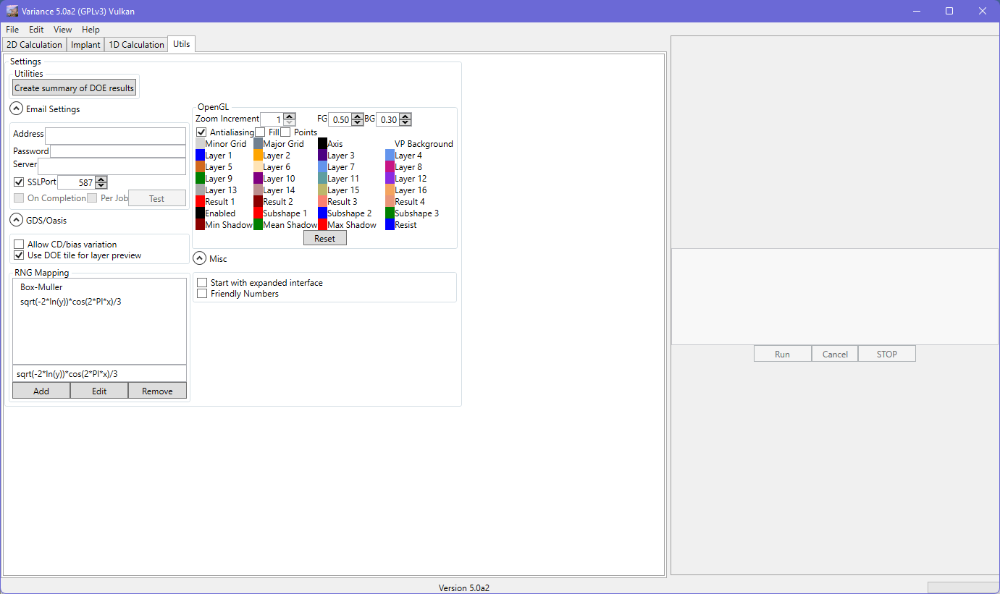
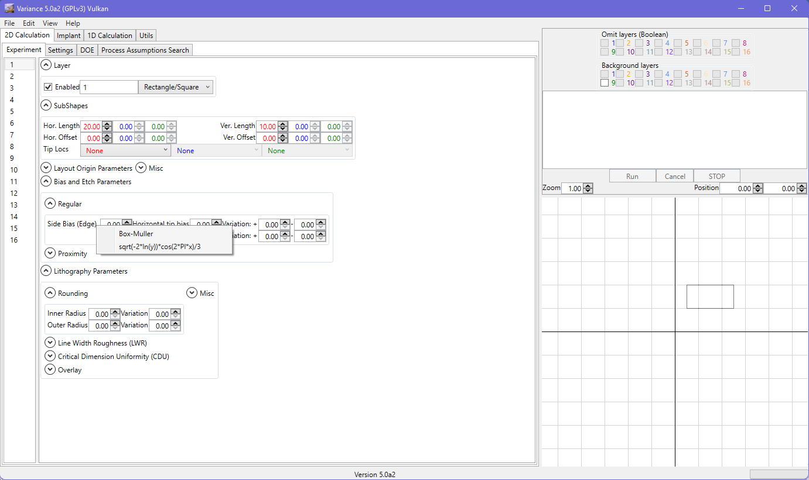
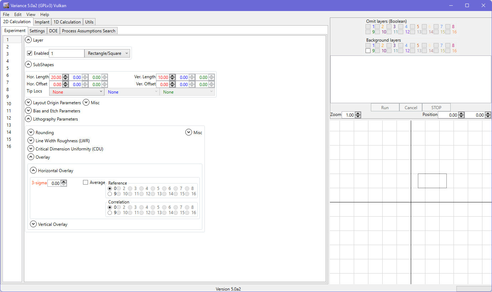

By default, Variance uses a Gaussian distribution for its inputs. This is achieved by mapping a uniform distribution into a Gaussian, through application of the Box-Muller transform. You can, however, choose to define a custom mapping equation and apply it to as many inputs as you like.
The RNG mapping is selected by double-clicking on the label for the propertyL

Some notes about custom mapping:

Custom mapping equations are entered into, or removed from, the system under the Utils tab. The equations are then available for selection by double-clicking on the label in the user interface (next to the numeric field), which will cause a menu to be displayed listing the available equations.
The underlying uniformally distributed RNG is available for access through several independent variables (i.e. they are independent calls to the RNG): x, y, z. In this way, you can reproduce the Box-Muller transform with :
sqrt(-2 * ln(y)) * cos(2 * PI * x)
This is the unscaled form; if you were working with 3 sigma normal inputs, you would need to compensate with a /3.0
For convenience, there are also three unscaled Box-Muller transformations (_gxy, _gyz, _gxz) available for use in the expression:
When adding an equation, the tool will validate the entry. Errors must be rectified before the equation can be added. Only unique equations will be added - duplicates will be silently ignored.
+, -, *, /, ^, %
^ is raised to (power) for example 3^2
% is the modulo operator
sqrt, sin, cos, tan, atan, acos, asin, acotan, exp, ln, log, sinh, cosh, tanh, abs, ceil, floor, fac, sfac, round, fpart. fac, sfac are factorial and semi-factorial functions. fpart returns the decimal part of a value.
!, ==, !=, ||, &&, >, < , >=, <= : Logical operators, 1.0 means true, 0.0 means false. If an expression evaluates to anything other than 1.0 it is considered false.
PI
Euler
false (0.0)
infinity